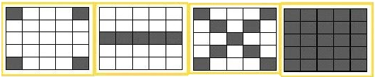

Time Limit: 1 sec
Memory Limit: 32 MB
Tele-loto is a lottery game that is held every weekend in Lithuania. Most of the population know this game and almost everyone have played it at least once. In this task you are asked to write an application which finds the winnings given N balls, the lottery tickets and amount of money for each combination. Possible combinations are listed below:

Totally 75 balls are in the game each with a unique number from 1 to 75. The i-th column in the ticket contains unique numbers in the interval [(i − 1) * 15 + 1; i * 15], no other numbers may appear in the column. If the ticket wins more than one combination the total money won is equal to the sum of money won for each combination. Pay attention that combination MidLine is applied only to a single middle line!
The first line contains the number of tests T (T ≤ 100). Then T tests follow. On the first line of each test there are 2 numbers: N (0 ≤ N ≤ 75) — number of balls, L (L ≤ 103) — number of tickets. On the second line there are N different integers indicating the values of the drawn lucky balls separated by a single space character. Next line contains 4 integers V (Vi ≤ 1000) indicating the values of each combination in left-to-right order as in the picture. Then 5 lines follow for each ticket with 25 different integers indicating the numbers on the ticket in the order as in the picture. Each line contains exactly 5 integers separated by a single space character.
For each test case output the line "Case T:" where T is a test number starting from 1. Then L lines follow each indicating the amount of money the ticket won in the order they appear in the input. The test cases must be separated by a blank line. Refer sample output for details.
1 9 1 12 67 8 75 4 30 42 54 74 2 5 10 1000 12 20 36 57 67 2 28 45 59 63 4 30 42 54 74 5 26 34 49 70 8 16 37 48 75
Case 1: 7